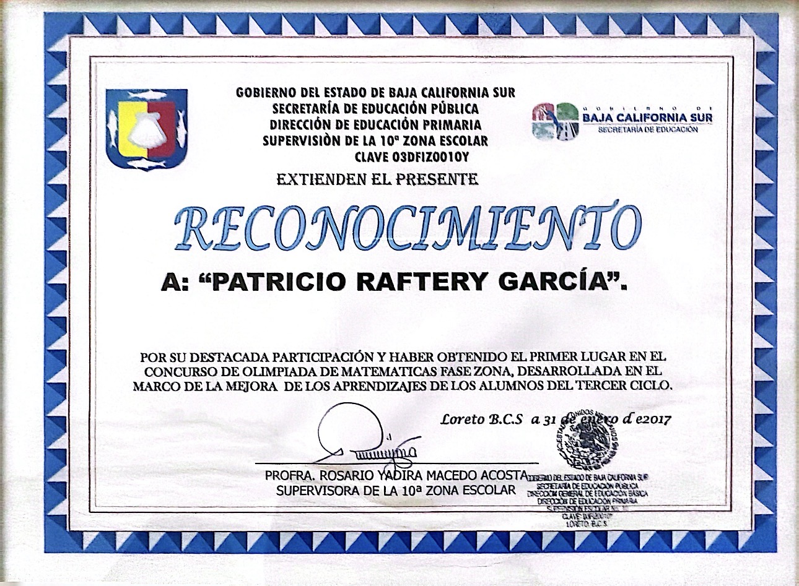
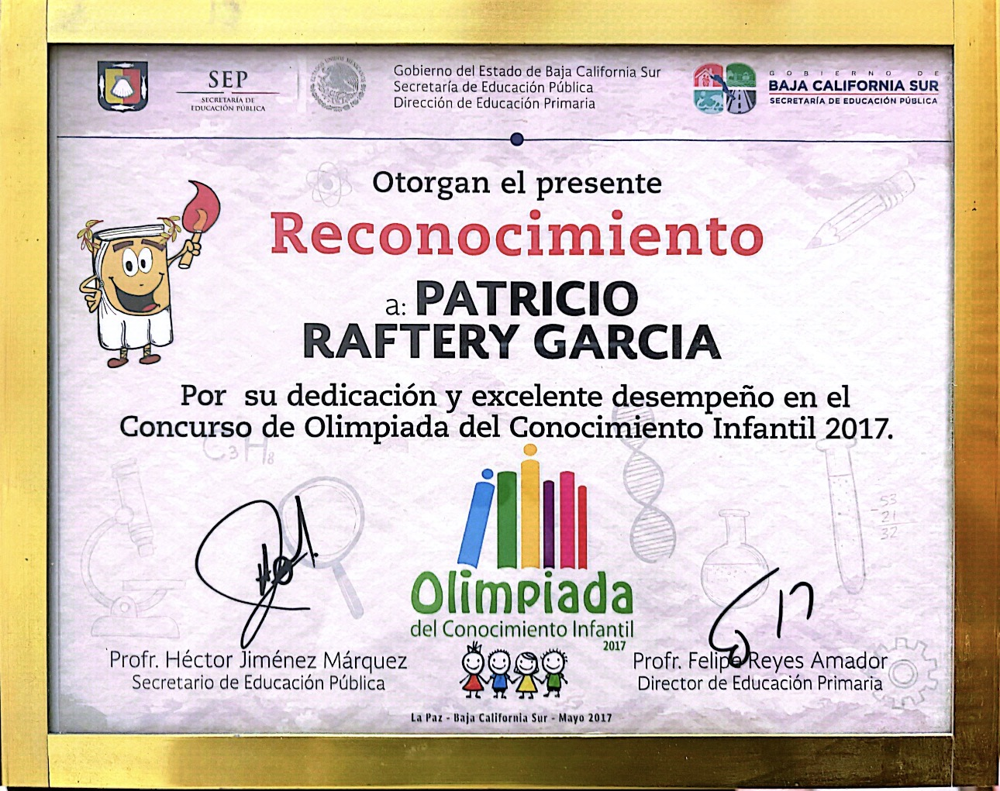
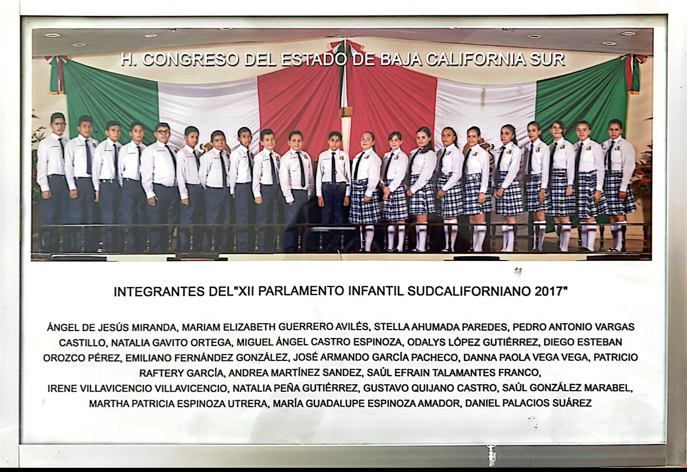

Mathematics & Academics
Competed extensively in regional and state-level mathematics, focusing on applied logic and problem-solving under time constraints. Below is a record of my academic competitions.

Fig 1. 1st Place — City-level Mathematics Olympiad

Fig 2. 6th Place — State-level General Knowledge Olympiad

Fig 3. Invitee — Youth Parliament of Baja California Sur